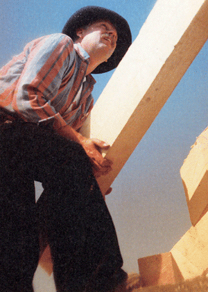

Hat der Arbeitgeber im Jahresdurchschnitt weniger als 51 Beschäftigte, kann er die Alternative Betreuung wählen. Kennzeichnend ist, dass der Arbeitgeber den Betreuungsaufwand bedarfsgerecht festlegt. Bei bis zu 10 Beschäftigten erfolgt die Betreuung durch ein Kompetenzzentrum, sonst durch den arbeitsmedizinisch-sicherheitstechnischen Dienst der BG BAU (ASD der BG BAU).
Hat der Arbeitgeber die Alternative Betreuung gewählt, ist er verpflichtet, persönlich an den von seiner Berufsgenossenschaft festgelegten Informations-, Motivations- und Fortbildungsmaßnahmen teilzunehmen.